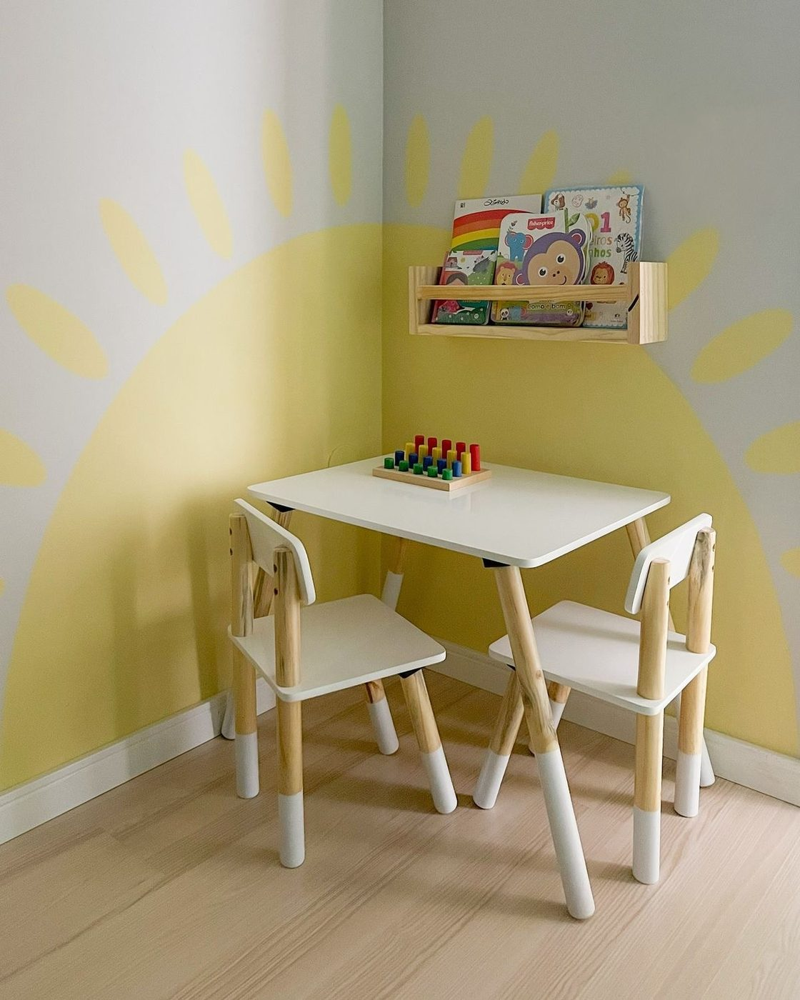
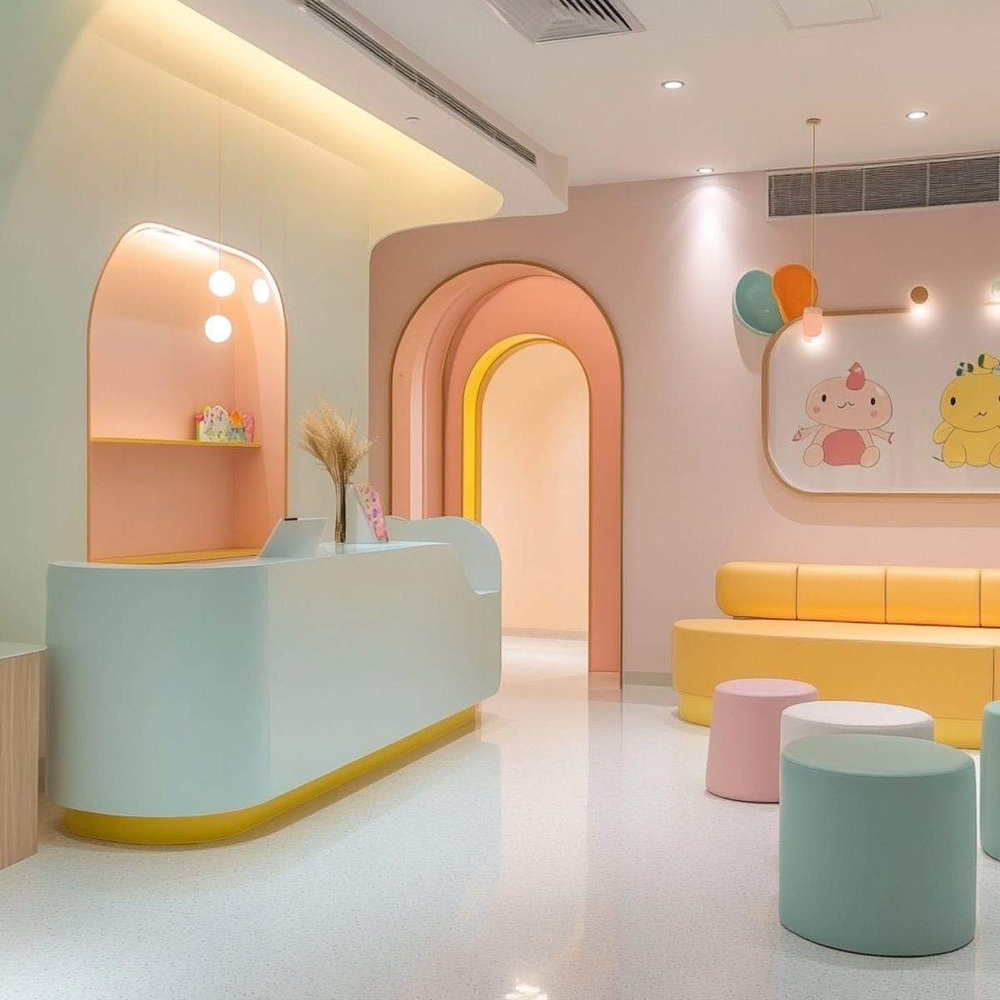
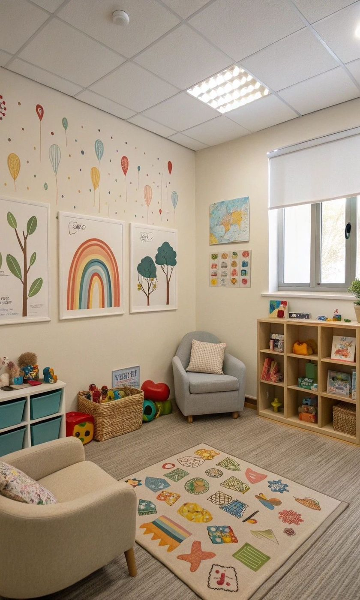
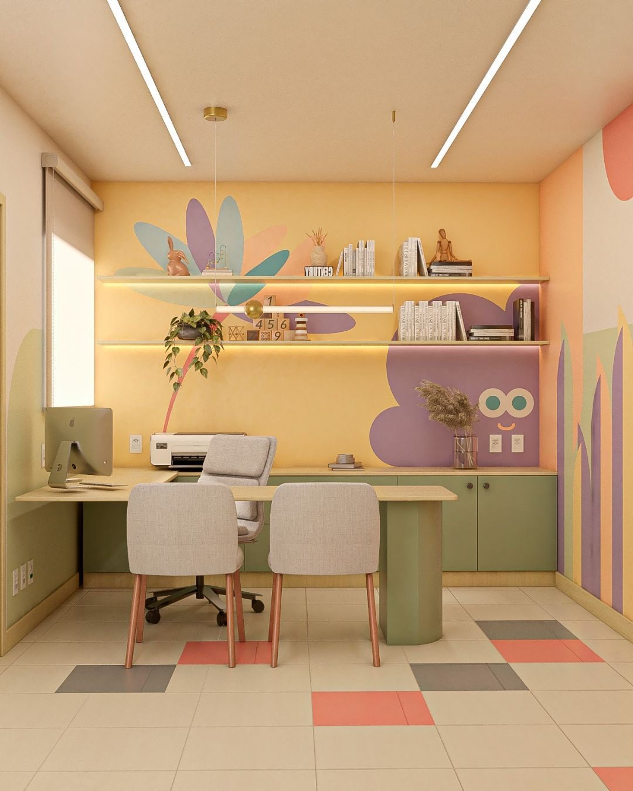

Pequenos passos. Grandes descobertas.
Um espaço pensado para acompanhar cada fase da infância com cuidado, conhecimento e um pouquinho de diversão.
Cuidar também é deixar descobrir.
Na infância, cada consulta é uma oportunidade de entender, acolher e acompanhar.
Um cuidado que entende a infância.
Um começo sem pressa
Criamos um ambiente onde crianças e famílias se sentem seguras desde o primeiro instante.
Cada criança, seu ritmo
Cada criança tem seu próprio ritmo, personalidade e história — e ouvimos antes de indicar.
Além da consulta
O cuidado continua além da consulta, em cada fase de crescimento e descoberta.
Tudo o que seu pequeno precisa.
Pediatria
Acompanhamento completo do desenvolvimento, da primeira consulta à adolescência.
Nutrição infantil
Alimentação saudável construída de forma leve e possível para toda a família.
Psicologia infantil
Um espaço seguro para entender emoções, comportamentos e vínculos.
Vacinação
Proteção em cada etapa do crescimento, com calendário e orientação claros.
Desenvolvimento
Acompanhamento dos principais marcos motores, sociais e cognitivos da infância.
Exames
Avaliações complementares para cuidar com mais precisão e tranquilidade.
Cada idade tem uma história.
Assim como as marcas na parede que registram cada centímetro, acompanhamos o crescimento em cada fase — no seu tempo.
Quem está ao seu lado nessa jornada.
Dra. Helena Costa
PediatraEspecialista em desenvolvimento infantil.
Dr. Lucas Martins
PediatraAcompanhamento integral da infância.
Dra. Marina Alves
NutricionistaNutrição infantil e comportamento alimentar.
Um lugar feito para eles.

"Pensado para pequenas pessoas."
"Esperar também pode ser divertido."
Brinquedoteca
Sala de atendimentoHistórias de quem viveu essa experiência.
"Desde a primeira consulta, meu filho se sentiu completamente à vontade."
Mariana, mãe do Theo"É a primeira clínica em que meu filho pede para voltar."
Renata, mãe do Bento"Sentimos que somos ouvidos, não só atendidos."
Paulo, pai da AliceUm guia para cuidar além da consulta.
O que observar?
Sinais que pedem atenção e quando procurar a clínica.
Ler mais → AlimentaçãoHábitos saudáveis
Como construir uma relação leve com a comida desde cedo.
Ler mais → SonoA rotina da criança
Entendendo o sono em cada fase do crescimento.
Ler mais → DesenvolvimentoO que esperar?
Marcos de cada fase, sem comparação e sem pressa.
Ler mais →Estamos aqui para acompanhar cada descoberta.
Vamos começar?
Preencha seus dados e nossa equipe entra em contato para agendar.
Recebemos seu pedido!
Em breve nossa equipe entra em contato para agendar sua consulta.